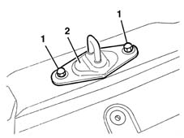
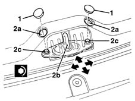

7015B18 tailgate lock striker - r+r
- Path
- Procedures > 70 FITTINGS > 7015 TAILGATE/ > 7015B tailgate locking/opening devices > 7015B18 tailgate lock striker - r+r
- Kind
- repair procedure (removal / refitting; the operation number is the code)
- Applies to
- all engines; all production periods
- Interactive page
- https://sloeber94.github.io/elrnDB-lYpsln/en/#/2429537
Applies to: all engines; all production periods
 Removing
Removing
 Refitting
Refitting7040B22 luggage compartment/load platform moulding - r+r
1. Undo the bolts.
2. Remove the striker.

Applies to: all engines; all production periods
Refitting
RemovingCheck that the striker is undamaged.
Position the striker and screw in the bolts without tightening them.
7040B22 luggage compartment/load platform moulding - r+r
1. Remove the covers.
2. Working on the bolts through the openings (2a), adjust the position of the striker (2b). Tighten the bolts (2c). The arrows show the possible movements.
 | Fastening | Component | Ø | Value (daNm) |
|---|---|---|---|---|
2c | Bolt | TAIL-GATE LOCK STRIKER | M6 | 0.9 |

Applies to: all engines; all production periods
Check that the tailgate opens and closes properly.